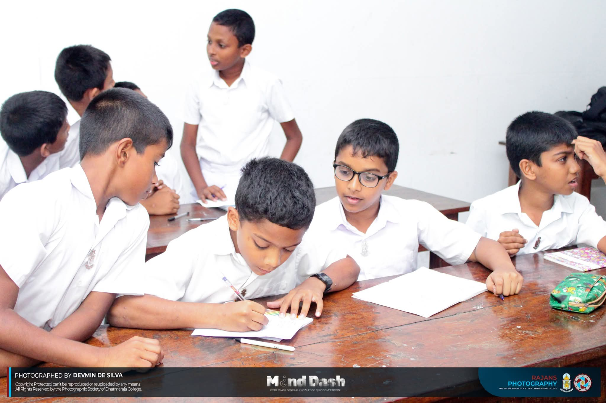
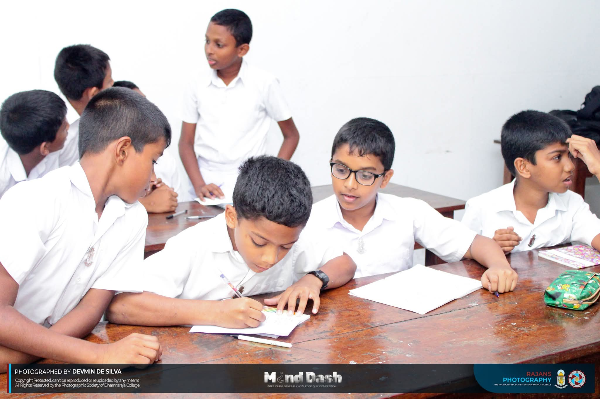

About Us
The Kandy Buddhist High School, founded in 1887 by Sir Henry Steel Olcot, faced challenges securing a plot near the Tooth Relic Temple due to a sacred Bo tree. Despite British opposition, Wadugodapitiya Punchirala Korale removed the tree overnight to build the school, facing severe consequences from the British rulers for the perceived sacrilege. Today, with 4100 students and 192 staff, the school thrives. Recent infrastructural additions, including a Swimming Pool Complex and an International Cricket Ground, mark its growth despite historical obstacles.
ExploreGET IN TOUCH WITH RAJANS
LATEST NEWS AND UPDATES
Acadamics
Education at the College transcends book and quill, seeking to mould a holistic personage out of every student. Employing the finest teachers in every field and equipped to support all learning needs, Dharmaraja College strives to produce individuals who make meaningful contributions to society.
Explore
 

Clubs & Societies
Dharmaraja College celebrates the freedom given to its students to express themselves. The College provides a plethora of clubs & societies to select from and the liberty to found a new community. This is the birthplace of idea-driven individuals that seek to make a difference in the world.
Explore
Sports and games
Taking the field with glory and honour, the gentlemen in Maroon and Light Blue are shaped to be the epitome of humility in victory and graciousness in defeat. With camaraderie born of hardship and perseverance birthed by adversity, sportsmen at Dharmaraja College strive to reach ever greater heights.
Explore137 Years of Excellence
Being one of the premier Buddhist schools in the country with a history of more than 137 years founded by Sir Henry Steel Olcot in 1887 as Kandy Buddhist High School. Several kandyan nobles including Dullawe Adhikaram, Wadugodapitiya Punchirala Korale, T.B. Panabokke and A.D.J. Gunawardena were instrumental in starting a buddhist college in Kandy. It eas decided that a plot of land in front of the Old Palace near the Tooth Relic Temple, adjoining the Natha Devalaya was the best for building the school. But there was an obstacle in that the plot was covered by a Bo tree, held sacred by the Buddhist, which had to be felled for putting up a school building.The British Administration opposed the felling citing that would be an action against Buddhism. Wadugodapitiya Punchirala Korale the Kapu Mahattaya of Devalaya, felled and removed the tree in one night, With a student population of around 4100 students, 192 staff members. Now the infrastructure facilities are almost completed with the construction of the new Swimming Pool Complex and the International Cricket Ground.
Explore Our History